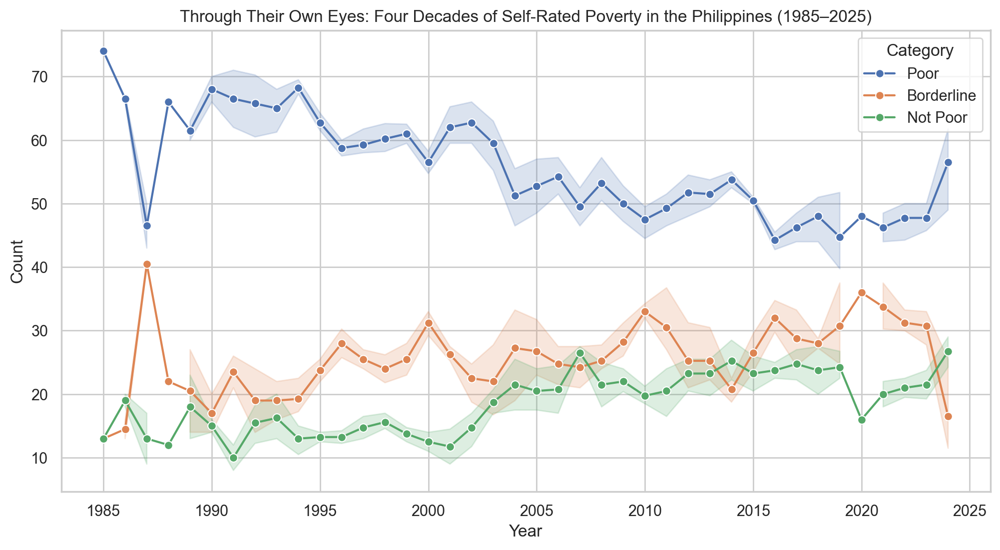

Overview
The surveys conducted by Social Weather Stations (SWS) are based on rigorous methodologies to ensure accuracy and reliability. Below are the key aspects of the methodology:
Sampling
The surveys use a stratified random sampling method to ensure representation across different regions, socioeconomic classes, and demographics.
Survey Instrument
Respondents are asked a standardized question: "Where would you place your family in terms of poverty: poor, borderline, or not poor?"
Frequency
Surveys are conducted quarterly, providing a consistent and up-to-date measure of self-rated poverty.
Data Collection
Interviews are conducted face-to-face by trained field personnel to minimize response bias and ensure clarity.
Sample Size
Each survey typically includes 1,200 respondents, with a margin of error of ±3% at the national level.
Scope
The surveys cover the entire Philippines, with four major geographic areas: National Capital Region (NCR), Balance Luzon (outside NCR), Visayas, and Mindanao.
This methodology ensures that the data collected reflects the perceptions of a diverse cross-section of the population, making it a valuable tool for understanding poverty trends in the Philippines.
Graph Representation

-
SWS Survey research institute
-
4 Regions
-
1,200+ Respondents
-
40 Years
Graph Interpretation
The self-rated poverty trends from 1985 to 2025 reveal a persistent high percentage of Filipinos considering themselves poor.
The "Poor" category has dominated, fluctuating mostly between 50% and 70%, while the "Borderline" and "Not Poor" groups remain significantly lower.
Various historical events, such as economic crises, political transitions, and natural disasters, have directly influenced poverty perception.
Major spikes align with economic downturns, inflation, and political instability, while brief declines reflect economic growth and reforms.
Key Historical Events and Their Impact

1985-1986: People Power Revolution
Graph Insight: Poverty was at its highest but declined after 1986.
Event: The fall of Ferdinand Marcos and the transition to democracy under Corazon Aquino led to economic optimism. However, economic instability remained high.
Learn more about the People Power

1991-1992: Mount Pinatubo Eruption
Graph Insight: Self-rated poverty spiked significantly.
Event: The eruption of Mount Pinatubo (1991) caused widespread displacement, agricultural losses, and economic strain, worsening poverty levels.
Learn more about the 1991 Eruption

1997-1998: Asian Financial Crisis & El Niño
Graph Insight: Sharp increase in poverty rates.
Event: The 1997 Asian Financial Crisis led to massive job losses and inflation. The El Niño drought (1998) further crippled the agricultural sector.
Learn more about the Asian Crisis

2008-2009: Global Financial Crisis
Graph Insight: Another rise in self-rated poverty.
Event: The 2008 Global Financial Crisis caused job losses and slowed economic growth, affecting many Filipinos.
Learn more about the Global Crisis

2020-2021: COVID-19 Pandemic
Graph Insight: One of the sharpest spikes in poverty.
Event: The pandemic lockdowns (2020-2021) resulted in massive unemployment, business closures, and economic recession.
Learn more about the Pandemic Economy

2022-2025: Post-Pandemic Recovery
Graph Insight: Fluctuating but some improvement.
Event: Economic recovery under the Marcos Jr. administration remains slow, with inflation and global economic instability affecting households.
Learn more about the Post Pandemic
Final Insights
From 1985 to 2025, self-rated poverty has remained a major issue in the Philippines, reflecting the nation’s economic struggles, political transitions, and global crises.
While certain periods (e.g., 2010s) saw economic improvements, major downturns like the 1997 crisis, 2008 recession, and COVID-19 pandemic caused sharp increases in poverty levels.
Future policies must address inflation, wages, and job security to achieve sustained poverty reduction.
Conclusion
The analysis of self-rated poverty trends in the Philippines from 1985 to 2025 highlights significant shifts in the socio-economic landscape, revealing both periods of progress and setbacks. By leveraging the detailed SWS survey data, we observed the following key insights:
- Persistent Challenges in Poverty – Despite various economic policies and interventions over the years, self-rated poverty remains a persistent issue for a large portion of the Filipino population. Economic growth has not consistently translated into meaningful improvements in the living conditions of the most vulnerable.
- The Impact of Political and Economic Events – Major political and economic events, such as global crises and local policy shifts, correlate strongly with fluctuations in self-rated poverty. The data suggests that certain administrations were more successful than others in addressing poverty, but the overall trend shows that poverty alleviation remains a complex, long-term challenge.
- The Role of Government Initiatives – Government programs aimed at poverty reduction have had varying degrees of success. While some initiatives led to short-term improvements, the sustained reduction of self-rated poverty requires comprehensive, systemic reforms that go beyond temporary aid.
- Need for Long-Term Structural Change – The findings suggest that, while short-term solutions may alleviate the symptoms of poverty, true progress can only be achieved through long-term structural reforms in education, healthcare, employment, and governance. The data underscores the importance of focusing on equitable economic growth and inclusive development policies.
- Slow Downward Trend – Without detracting from the insights shared in the preceding sections, there is a slow downward trend in the number of people reporting that they are poor, and a gradual upward trend in those reporting that they are not poor. As we have noted, while there have been short-term fluctuations, the overall trend remains downward. However, this slow downward trend over the decades does not seem to align with the rapid economic growth the country has experienced in the same period. Thus, we can surmise that while the nation has seen economic growth, the benefits of this growth have been slow to reach the Filipino masses.
In conclusion, while the Philippines has made some strides toward improving its poverty situation, there is much work to be done. The persistence of high levels of self-rated poverty underscores the need for more effective, comprehensive, and inclusive poverty reduction strategies that address the root causes of inequality and improve the quality of life for all Filipinos.